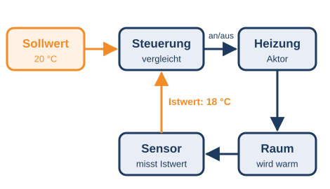

Teil 1 · Sensoren, Steuerung, Aktoren
Ein automatisiertes Gerät arbeitet ohne dass jemand einen Knopf drückt. Es funktioniert nach dem EVA-Prinzip aus Station 1:
- Sensor (Eingabe): misst etwas aus der Umgebung – Licht, Temperatur, Bewegung, Druck, Geräusche.
- Steuerung (Verarbeitung): ein kleiner Computer mit einem Programm. Er entscheidet, was passieren soll.
- Aktor (Ausgabe): setzt die Entscheidung um – ein Motor, eine Lampe, ein Lautsprecher, eine Heizung.
Beispiel Schiebetür: Der Bewegungsmelder (Sensor) bemerkt dich. Die Steuerung entscheidet: „Tür auf!“ Der Motor (Aktor) schiebt die Tür zur Seite.
BasisSensor, Steuerung oder Aktor?
Klick in jeder Zeile das passende Feld an.
BasisWas macht ein Aktor?
ProfiDas Licht im Flur
Ein Bewegungsmelder schaltet das Licht ein. Nach der letzten Bewegung bleibt es noch 60 Sekunden an. Jede neue Bewegung startet die 60 Sekunden von vorn.
Tipp
Zeichne einen Zeitstrahl von 0 bis 140 Sekunden. Markiere jede Bewegung und zähle 60 Sekunden weiter.Wenn du die Lösungen ansiehst, zählt dieser Profi-Teil nicht als selbst gelöst. Deine Lernbegleitung sieht das. Trotzdem anzeigen?
Teil 2 · Wenn-dann-Regeln
Die Steuerung arbeitet mit Regeln, die ein Mensch programmiert hat. Sie haben fast immer die Form WENN … DANN … – genau wie der Block falls … dann in Scratch.
DANN Licht an
SONST Licht aus
Bei UND müssen beide Bedingungen stimmen. Bei ODER reicht eine von beiden.
BasisWelche Regel passt?
Eine Straßenlaterne soll nur leuchten, wenn es draußen dunkel ist.
BasisLicht an oder aus?
Es gilt die Regel aus dem Kasten oben. Klick in jeder Zeile an, was passiert.
Achtung bei 30: „kleiner als 30“ heißt, 30 selbst gehört nicht dazu.
😺 Exkurs in Scratch: Die Klatsch-Lampe
Lautstärke(Fühlen): misst über das Mikrofon, wie laut es ist – von 0 (still) bis 100 (sehr laut). Beim ersten Mal fragt der Browser, ob Scratch das Mikrofon benutzen darf. Klick auf „Zulassen“.setze Effekt [Helligkeit] auf ( )(Aussehen): macht eine Figur heller oder dunkler. 0 ist normal, 100 ganz hell, −100 ganz dunkel.
Baue eine Lampe, die angeht, wenn du klatschst, und beim nächsten Klatschen wieder ausgeht. Das Mikrofon ist der Sensor, dein Programm die Steuerung, die Lampe auf dem Bildschirm der Aktor.
Tipp 1: Die Regel
In einerwiederhole fortlaufend-Schleife: falls <(Lautstärke) > (40)> dann … Probier aus, welcher Wert bei euch im Raum gut passt.Tipp 2: An und aus
Leg eine Variablelicht an (0 = aus, 1 = an). Beim Klatschen: falls <(licht) = 0> dann → setze licht auf 1 und setze Effekt [Helligkeit] auf (60), sonst → zurück auf 0.Tipp 3: Nicht flackern
Ein Klatschen dauert länger als ein Schleifendurchlauf – die Lampe springt dann mehrmals hin und her. Einwarte (0.5) Sekunden nach dem Umschalten hilft.Kein Mikrofon da? Nimm stattdessen Taste [Leertaste] gedrückt? als „Sensor“.
Wenn du in Scratch nicht weiterweißt: In Station 0 kannst du die Grundlagen nachschlagen.
ProfiRegeln mit UND und ODER
Eine Gartenbewässerung hat diese Regel: WENN (Boden trocken UND kein Regen) ODER Taste gedrückt DANN Wasser an. Gib jeweils „an“ oder „aus“ ein.
Tipp
Rechne zuerst die Klammer aus: Stimmen beide Teile? Danach prüfst du das ODER: Reicht die Klammer oder die Taste?Wenn du die Lösungen ansiehst, zählt dieser Profi-Teil nicht als selbst gelöst. Deine Lernbegleitung sieht das. Trotzdem anzeigen?
Teil 3 · Steuern oder Regeln?
Steuern: Das Gerät macht stur, was eingestellt ist – es prüft nicht, ob das Ergebnis stimmt. Ein Toaster mit Zeitschaltuhr toastet 2 Minuten, egal ob das Brot schon schwarz ist.
Regeln: Ein Sensor misst immer wieder das Ergebnis und meldet es zurück. Die Steuerung vergleicht den gemessenen Istwert mit dem gewünschten Sollwert und gleicht aus. Weil die Messung immer wieder zurückkommt, spricht man von einem Regelkreis.

Probier beide Betriebsarten aus und öffne zwischendurch das Fenster. Welche Heizung hält die Temperatur besser?
BasisSteuern oder Regeln?
Klick in jeder Zeile das passende Feld an.
BasisWas gehört zum Regelkreis?
Woran erkennst du, dass ein Gerät regelt und nicht nur steuert?
ProfiDas Thermostat
Ein Thermostat hat den Sollwert 20 °C. Damit die Heizung nicht dauernd an- und ausspringt, gilt: Unter 19 °C schaltet es die Heizung an, über 21 °C schaltet es sie aus. Dazwischen bleibt sie, wie sie gerade ist.
Tipp
Frag dich zuerst: Liegt der Messwert unter 19, über 21 oder dazwischen? Nur in den ersten beiden Fällen ändert sich etwas.Wenn du die Lösungen ansiehst, zählt dieser Profi-Teil nicht als selbst gelöst. Deine Lernbegleitung sieht das. Trotzdem anzeigen?
💭 Denkfrage
Ein Toaster mit Zeitschaltuhr steuert nur. Was kann dabei schiefgehen? Und wie müsste ein Toaster gebaut sein, der regelt?
Nach dem Senden siehst du eine Musterlösung. Deine Antwort kannst du danach nicht mehr ändern.
Teil 4 · Chancen und Risiken
Automaten arbeiten ohne Pause, sehr genau und auch an gefährlichen Orten. In Fabriken bauen Roboter Autos zusammen, in Lagern sortieren Maschinen Pakete. Aber: Ein Automat macht nur, was in seinen Regeln steht. Liefert ein Sensor falsche Werte, trifft auch die Steuerung falsche Entscheidungen. Und wenn Maschinen Arbeit übernehmen, verändern sich Berufe.
BasisVorteil oder Nachteil?
Klick in jeder Zeile das passende Feld an.
BasisDer kaputte Sensor
Der Temperatursensor einer Heizung ist kaputt und meldet immer 15 °C. Was passiert?
ProfiRoboter in der Fabrik
Ein Roboter setzt 12 Teile pro Minute zusammen. Ein Mensch schafft 3 Teile pro Minute. Eine Schicht dauert 8 Stunden.
Tipp
Rechne die Schicht zuerst in Minuten um. Bei der Wartung: Wie viele Minuten pro Stunde arbeitet der Roboter wirklich?Wenn du die Lösungen ansiehst, zählt dieser Profi-Teil nicht als selbst gelöst. Deine Lernbegleitung sieht das. Trotzdem anzeigen?
Teil 5 · Checkpoint
ProfiProjekt: Ein Thermostat in Scratch
Baue die Heizungs-Simulation selbst: Eine Variable temperatur sinkt langsam, solange die Heizung aus ist, und steigt, solange sie an ist. Dein Thermostat regelt sie auf einen Sollwert, den man mit den Pfeiltasten verstellen kann. Eine Figur zeigt, ob die Heizung gerade an ist.
Tipp 1
Du brauchst drei Variablen:temperatur, soll und heizung (0 oder 1). Setz am Anfang temperatur auf 18 und soll auf 20. Zeig die Variablen auf der Bühne an.Tipp 2
In einerwiederhole fortlaufend-Schleife: falls <(heizung) = 1> dann → ändere temperatur um (0.2), sonst → ändere temperatur um (-0.1). Ein warte (0.2) Sekunden macht es langsamer.Tipp 3
Die Regeln des Thermostats:falls <(temperatur) < ((soll) - (1))> dann → setze heizung auf 1. falls <(temperatur) > ((soll) + (1))> dann → setze heizung auf 0.Tipp 4: Für Profis
Bau eine Störung ein: Drückt man die Taste F, „öffnet sich das Fenster“ und die Temperatur sinkt schneller. Regelt dein Thermostat das wieder aus?Wenn du in Scratch nicht weiterweißt: In Station 0 kannst du die Grundlagen nachschlagen.